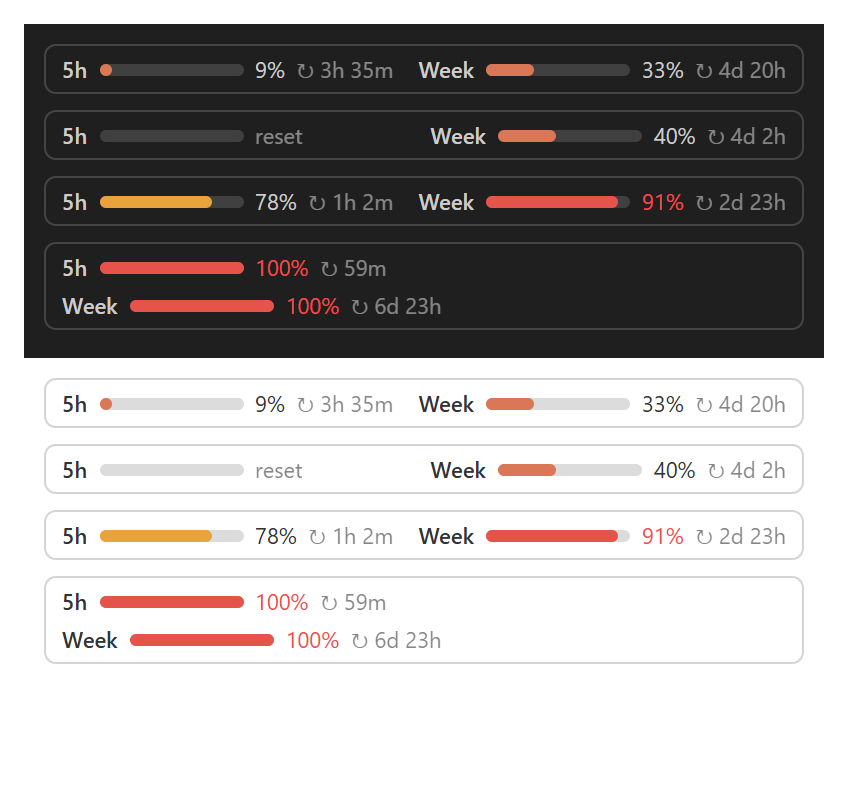

Check your Claude usage limits right inside Claude Code
A free Claude Code plugin that shows your 5-hour session limit and weekly limit as progress bars above the prompt, with a countdown to when each Claude limit resets. For Claude Pro and Max plans.

See how much Claude you have left
5-hour and weekly limits
Both Claude usage limits side by side, each with its own percentage.
Reset countdown
See exactly when your Claude limit resets, refreshed every minute.
Colour warnings
Bars turn amber at 75% and red at 90%, so you know before you hit the limit.
Task-finished chime
A short chime and notification when Claude finishes, even in another window. Mute it any time.
VS Code, desktop, terminal
Progress bars in VS Code and the desktop app, a one-line summary in the terminal.
Private
Reads only the figures Claude Code already has. No network requests, no login access.
Install
You need a Claude Pro or Max subscription, Claude Code signed in, and Git. Run this in PowerShell (Windows) or Terminal (Mac/Linux):
claude plugin install usage --marketplace SakithaSamarathunga33/claude-usage-limitsThen open a new Claude session. The bars appear after your first reply. Type /limits for a detailed view, /limits mute or /limits unmute for the chime.
| Where you use Claude Code | What you get |
|---|---|
| VS Code extension | Progress bars above the prompt |
| Desktop app | Progress bars above the prompt |
| Terminal | 5h ▰▰▰▰▱▱▱▱▱▱ 42% ↻ 2h14m │ Week ▰▰▱▱▱▱▱▱▱▱ 18% ↻ 2d3h |
FAQ
How do I check my Claude usage limit in Claude Code?
Install this plugin with the command above. Your 5-hour and weekly Claude usage then shows as progress bars above the prompt. Type /limits for a detailed view.
How do I see when my Claude limit resets?
Each bar ends with a countdown, such as ↻ 2h14m for the 5-hour limit or ↻ 2d3h for the weekly limit. It refreshes every minute.
Does it show the weekly limit as well as the 5-hour limit?
Yes. Both the 5-hour session limit and the weekly limit are shown side by side, each with its own percentage and reset time.
Which Claude plans does it work with?
Claude Pro and Claude Max. API-key logins have no plan limits, so there is nothing to show.
Does it work in VS Code?
Yes. In the Claude Code VS Code extension and the desktop app you get progress bars above the prompt. In the terminal you get a one-line summary under the prompt.
Is the Claude usage limits plugin free?
Yes. It is free and open source under the MIT license.